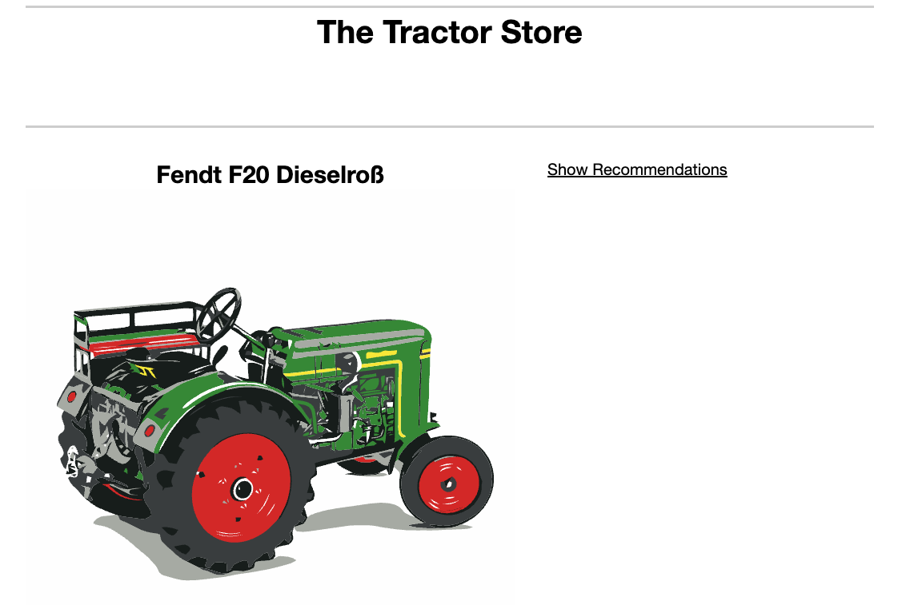
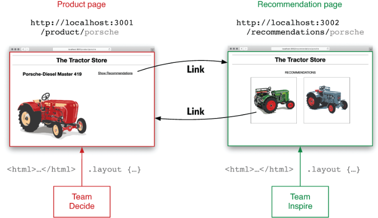
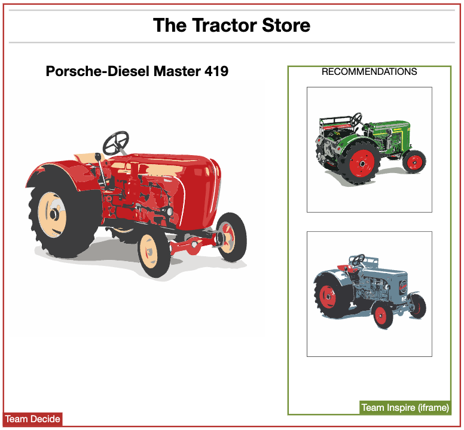
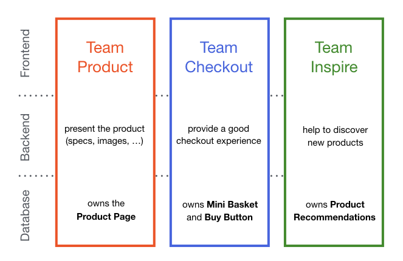

VIDEO
VIDEO
- What do you think, is this a micro frontend?
- It is a flash embeded in a html page
- It is a micro frontend because it is a small part of the page
What are micro frontends?
Small frontend applications that are composed into a bigger application and each small application is
deployable independently.
Why micro frontends?
Incremental upgrades
Faster delivery
More scalable organisations with decoupled, autonomous teams
Reducer scope
Independent deployments
- Incremental upgrades:
- Incremental upgrades: We are able to upgrade a part of the application without affecting the rest of the
application
- Incremental upgrades:: smaller, more cohesive and maintainable codebases
- Incremental upgrades:: If we are talking about dependency upgrade, we can upgrade only the part that needs
the upgrade
- More scalable organisations with decoupled, autonomous teams:
- More scalable organisations: We can have multiple teams working on the same application
- More scalable organisations: Each team can work on a different part of the application
- More scalable organisations: Each team can use a different technology stack
- More scalable organisations: Each team can deploy their part of the application independently
- Reducer scope
- Reducer scope: its more easy to understand a small codebase for new developers
- Reducer scope: its more easy to maintain a small codebase
- Reducer scope: its more easy to test a small codebase
- Independent deployment:
- Independent deployment: We can deploy each part of the application independently and at a different time
- Independent deployment: rollbacks independently
- Independent deployment: We can have separate CI/CD
Drawbacks of micro frontend
Increased complexity & learning curve
Performance overhead
Cross-team coordination
Requires additional tooling
- Increased complexity: Micro frontend introduces additional complexity to the development process. Managing
multiple independent front-end applications requires coordination, communication, and synchronization among
teams. This complexity can lead to a steeper learning curve and higher maintenance overhead.
- Performance overhead: Since micro frontends involve multiple independent applications, there can be an
increase in the number of requests and payload size, potentially impacting performance. This can result in
slower page loading times and increased network latency.
- Cross-team coordination: As each micro frontend is developed and maintained by a separate team, there is a
need for effective collaboration and coordination among teams. Ensuring consistency in design, user
experience, and shared dependencies can be challenging and may require additional communication efforts.
- Browser compatibility: Different micro frontends may rely on different frameworks, libraries, and
dependencies, which can lead to compatibility issues across browsers. Ensuring consistent behavior and
compatibility across different micro frontends can be a complex task.
- Deployment complexity: Deploying and managing multiple independent micro frontends can be more complex
than
deploying a monolithic application. Coordinating deployments, handling versioning, and managing
compatibility among micro frontends can add complexity to the deployment process.
- Increased resource consumption: Each micro frontend requires its own resources, such as memory and
processing power. As the number of micro frontends grows, the overall resource consumption of the system may
increase, potentially impacting scalability and cost.
Recap
In short, micro frontends are all about slicing up big and scary things into smaller, more manageable
pieces.
Implementation of micro frontends
- How do we implement micro frontends?
- How do we compose multiple micro frontends into a bigger application?
- How do we communicate between micro frontends?

Github code
- let start with an example
- We have a tractor store
- We have the product details page, where we list all the tractors
- We have the recomandation section, where we can see the recomandation for the tractors
Integration approaches
- There are different ways to integrate micro frontends
- We can use iframes
- We can use web components
- We can use server side includes
- We can use client side includes
- We can use a combination of the above
Server-side composition
- The second approach is to use server side composition
- We are using ng config to configure the server to include the micro frontends
Build-time integration
{
"name": "@tractor/container",
"version": "1.0.0",
"description": "A tractor store",
"dependencies": {
"@tractor/decide": "^1.2.3",
"@tractor/inspire": "^7.8.9"
}
}
- publish each micro frontend as a package, and have the container application include them all as library
dependencies
- This approach is similar to how we would build a monolithic application, but instead of including the
source code of each micro frontend, we include the compiled version of each micro frontend.
Run-time integration via links

- The first approach is to use links
- Its the simplest approach
Run-time integration via iframes

- We can use iframes to integrate micro frontends
- offer a good degree of isolation in terms of styling and global variables not interfering with each other
- Cons: layout constraints - automatic iframe height adjustment is not possible
- Cons: they make routing, history, and deep-linking more complicated
- Cons: the performance of iframes is not as good as other integration approaches
- Cons: WCAG is not good in iframes
- Cons: SEO is not good in iframes
- Iframe makes sens when we have a desktop application like Spotify or 8x8 Work
Run-time integration via Web Components
Run-time integration via JavaScript
- is probably the most flexible one
- we have a shell app which is responsible for loading the micro frontends
The tractor store
Live code Model store
- let start with an example
- We have a tractor store, where we sell tractors
- We have the product list page, where we list all the tractors
- We have the buy button and busket, where we can buy the tractors
- We have the recomandation section, where we can see the recomandation for the tractors
We have three teams

- let start with an example
The tractor store
- each team is responsible for a part of the application